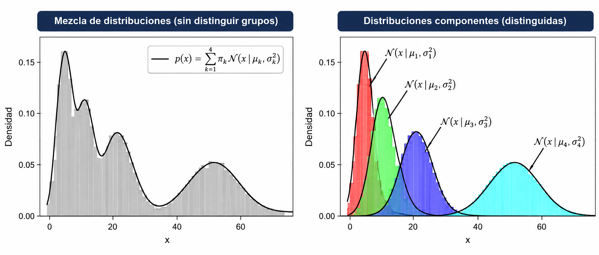
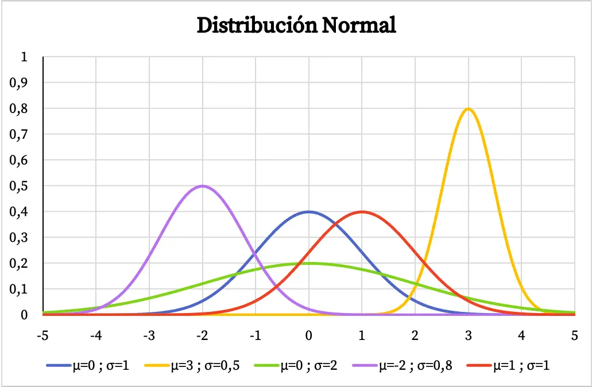
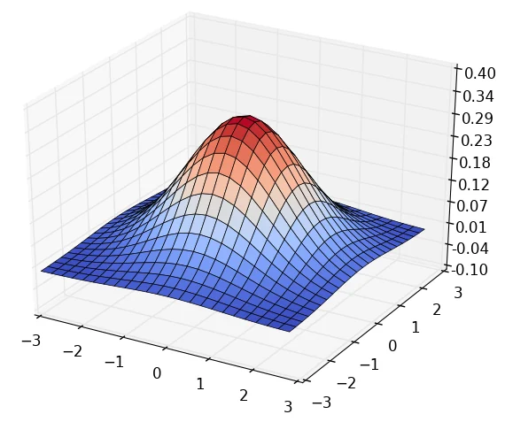
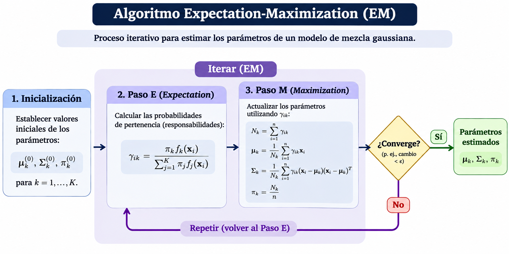

Aprendizaje no supervisado
Modelos de mezclas gaussianas (GMM)
Introducción
Los modelos de mezclas gaussianas (Gaussian Mixture Models, GMM) son modelos probabilísticos que representan los datos mediante una combinación de distribuciones normales.
Cada distribución gaussiana representa un componente de la mezcla que puede asociarse con un cluster.
A diferencia de K-means:
- Permiten representar clusters con diferentes formas, tamaños y orientaciones.
- Asignan probabilidades de pertenencia a cada cluster.
- Permiten que las distribuciones de los clusters se superpongan.
Introducción

Distribución gaussiana
Una distribución gaussiana describe cómo se distribuyen las observaciones alrededor de una media.
En una dimensión, su función de densidad es:
\[ f(x)=\frac{1}{\sqrt{2\pi\sigma^2}} \exp\left(-\frac{(x-\mu)^2}{2\sigma^2}\right) \]
donde:
- \(\mu\): media de la distribución.
- \(\sigma^2\): varianza de la distribución.
- \(x\): valor de una observación.

Distribución gaussiana
Cuando las observaciones tienen varias variables, se utiliza una distribución gaussiana multivariada. Su función de densidad es:
\[ f(\mathbf{x})= \frac{1}{(2\pi)^{d/2}|\Sigma|^{1/2}} \exp\left( -\frac{1}{2} (\mathbf{x}-\boldsymbol{\mu})^T \Sigma^{-1} (\mathbf{x}-\boldsymbol{\mu}) \right) \]
donde:
- \(\mathbf{x}\): vector de características de una observación.
- \(\boldsymbol{\mu}\): vector de medias de las variables.
- \(\Sigma\): matriz de covarianzas que describe la dispersión y relación entre las variables.

Modelo de mezclas gaussianas
Un GMM supone que las observaciones provienen de una combinación de \(K\) distribuciones gaussianas. Su función de densidad se expresa como:
\[ p(x)=\sum_{k=1}^{K}\pi_k \mathcal{N}(x\mid\boldsymbol{\mu}_k,\Sigma_k), \quad \sum_{k=1}^{K}\pi_k=1 \]
donde:
- \(\pi_k\): peso del componente \(k\).
- \(\boldsymbol{\mu}_k, \Sigma_k\): vector de medias y matriz de covarianzas.
- \(\mathcal{N}\): densidad de la distribución normal.
Asignación probabilística
A diferencia de K-means, GMM utiliza una asignación suave (soft clustering).
Cada observación tiene una probabilidad de pertenecer a cada componente.
Por ejemplo:
| Observación | Cluster 1 | Cluster 2 |
|---|---|---|
| A | 0.95 | 0.05 |
| B | 0.60 | 0.40 |
| C | 0.10 | 0.90 |
Si se requiere una asignación única, la observación se asigna al componente con mayor probabilidad.
Ejemplo: probabilidades de pertenencia
Considera las observaciones:
\[ X=\{1,2,3,5,6,7\} \]
Supongamos que inicialmente tenemos dos componentes gaussianos:
| Parámetro | Gaussiana 1 | Gaussiana 2 |
|---|---|---|
| Media \(\mu\) | 2 | 6 |
| Varianza \(\sigma^2\) | 4 | 4 |
| Peso \(\pi\) | 0.5 | 0.5 |
Queremos calcular la probabilidad de pertenencia de la observación \(x=3\) a cada componente.
Ejemplo: probabilidades de pertenencia
Primero, evaluamos las funciones de densidad:
\[ f_k(x)=\frac{1}{\sqrt{2\pi\sigma_k^2}} \exp\left(-\frac{(x-\mu_k)^2}{2\sigma_k^2}\right) \]
Obtenemos:
\[ f_1(3)\approx 0.1760,\qquad f_2(3)\approx 0.0648 \]
Para obtener las probabilidades de pertenencia, utilizamos el teorema de Bayes:
\[ P(z=k\mid x)= \frac{\pi_k f_k(x)} {\sum_{j=1}^{K}\pi_j f_j(x)} \]
Ejemplo: probabilidades de pertenencia
Para la primera gaussiana:
\[ P(z=1\mid x=3)= \frac{0.5(0.1760)} {0.5(0.1760)+0.5(0.0648)} \approx 0.731 \]
Para la segunda gaussiana:
\[ P(z=2\mid x=3)= \frac{0.5(0.0648)} {0.5(0.1760)+0.5(0.0648)} \approx 0.269 \]
Por lo tanto, la observación \(x=3\) tiene mayor probabilidad de pertenecer al primer componente, pero ambos componentes contribuyen a explicar su origen.
Algoritmo EM
Los parámetros se estiman mediante el algoritmo Expectation-Maximization (EM).
Inicialización: establecer medias \(\boldsymbol{\mu}_k^{0}\), covarianzas \(\Sigma_k^{0}\) y pesos iniciales \(\pi_k^{0}\).
Paso E (Expectation): calcular las probabilidades de pertenencia \(\gamma_{ik}\).
Paso M (Maximization): actualizar los parámetros \(\boldsymbol{\mu}_k, \Sigma_k, \pi_k\).
Repetición: alternar los pasos E y M hasta alcanzar la convergencia.
Algoritmo EM

Hiperparámetros de GMM
| Hiperparámetro | Descripción |
|---|---|
n_components |
Número de componentes gaussianos. |
max_iter |
Número máximo de iteraciones del algoritmo EM. |
tol |
Tolerancia utilizada para determinar la convergencia. |
random_state |
Semilla para controlar la aleatoriedad. |
El número de componentes puede seleccionarse utilizando criterios como AIC o BIC.
Se ajustan modelos con distintos valores de \(K\) y se selecciona aquel que minimiza AIC o BIC, según el criterio elegido.
Consideraciones importantes
- Requiere establecer el número de componentes gaussianos.
- Permite asignaciones probabilísticas.
- Puede representar clusters elípticos.
- Es sensible a la inicialización y puede converger a óptimos locales.
- Puede presentar problemas cuando las matrices de covarianza son singulares o casi singulares.
Preguntas

¿Qué sigue?
En el siguiente notebook implementaremos un modelo de mezclas gaussianas, visualizaremos las distribuciones estimadas y analizaremos cómo cambian los resultados al modificar el número de componentes y las matrices de covarianza.
Modelado de Datos · UACJ